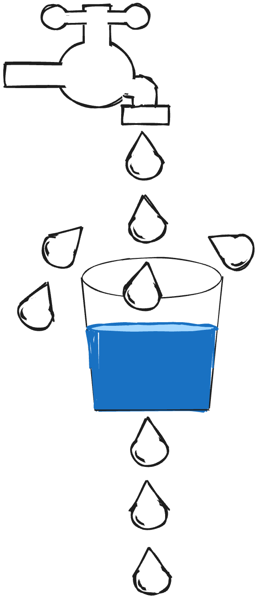

수많은 클라이언트들의 동시다발적인 요청이 계속 보내지게 되면,
서버에 과부하가 걸리고 결국에는 shut down 되는 위험이 있을 수 있습니다.
이러한 위험을 방지하기 위한 방법이 바로 요청에 제한을 두는 것입니다.
Rate Limiter 를 구현하는 방식으로는 다음과 같은 방법들이 있습니다.
Rate Limiter 구현? 방법
API를 관리 플랫폼(Business Products) 사용하기
- tyk.io, apigee, cloudflare 등으로 따로 구현하지 않고 사용만으로 처리할 수 있습니다.
- 단점으로는 비용이 비쌀 수 있다는 점과,
- 필요한 것 이상의 필요치 않는 기능을 위해 돈을 내야 된다는 점이 있습니다.
API를 관리 서비스(Cloud Service) 사용하기
- AWS API Gateway, Google Cloud API Gateway
- 간편하긴 하지만 내 입맛에 맞게 조정하는 데는 한계가 있을 수 있습니다.
대부분 기업들은 자체적으로 Rate Limiter를 구현하는 경우가 많다고 합니다.
Rate Limit 필요성
- Dos 공격(Denial-Of-Service attack)에 대한 시스템 보호할 수 있습니다.
: 특정 API로 수많은 요청을 통해 서버를 다운 시키는 공격 - 365일 서버를 안정적으로 운영할 수 있습니다.
- 사용자들 간에 요청에 대한 공정성을 위해서 입니다.
: 한 사용자의 너무 많은 요청으로, 다른 사용자가 이용하지 못하게 되지 않도록 방지 - 사용자가 유료/무료 버전에 따라 API를 제한할 수도 있습니다. (부가적인 기능)
: Youtube API나 일반적인 외부 API의 경우에는 일일 횟수 제한이 있습니다.
Rate Limit Flow
- A 클라이언트가 너무 많은 요청을 보내서 Rate Limit에 걸리는 경우,
- 서버는
**429 Too Many Requests**상태코드 반환합니다.
429 응답을 반환할 때, 헤더에 [Retry-After: 2400] 정보를 함께 보내는 것을 권고하고 있습니다.
(Retry-After: 얼마 후에 다시 요청해 달라는 요청)
Rate Limit 구현 방법
- Global API Rate Limiting
- Per User API Rate Limiting
일반적으로는 위의 2가지를 모두 함께 사용하게 됩니다.
🤔 Rate limiting in production?
규모가 있는 경우에는 서버가 여러 인스턴스로, 여러 클러스터로 구성되는 경우가 많습니다. 이 경우에는 요청이 공평하게 분배 되도록 Load Balancer를 사용하게 됩니다.
그리고 Redis Store를 별도로 두어서 사용자 별로 요청 횟수를 기록합니다. 서버는 Redis 조회되는 정보로 요청의 승인/거부를 판단합니다.
Rate Limit 알고리즘 종류
1. Fixed Window Counter
- 정해진 시간 단위로 window가 만들어 지고 요천 건수가 기록 됩니다.
- window의 요청 건수가 정해진 건수보다 크면 해당 요청은 거부됩니다.
🔥 하지만 경계 시간대(18:59, 17:01에 몰리면)에 요청이 오면 두 배의 부하를 받게 됩니다.
즉 구현은 쉽지만, 구간 경계의 트래픽 편향 문제가 발생됩니다.
2. Sliding Window
- Fixed Window Counter 단점의 경계 편향을 보안한 위한 알고리즘 입니다.
- 요청이 들어온 시간대 앞 뒤로 조금 조금씩 살펴 이전의 윈도우까지 살펴서 총 몇번의 요청이 들어왔는지 검사합니다.
🔥 하지만 window 요청건에 대해 로그 관리를 해야 하므로 구현과 메모리 비용이 높은 문제가 있습니다.
3. Leaky Bucket
동시다발적으로 들어오는 요청들을 양동이에 담아놓고,
양동이 밑에 구멍을 뚫어 천천히 떨어지도록 만드는 기법입니다.

장점은 동시다발적으로 많은 요청이 들어와도 결국은 일정 간격으로 천천히 처리를 하기 때문에,
서버의 과부화를 줄일 수 있습니다.
하지만 특정 시간대에 많은 요청이 필요한 경우라면,
예를 들어 특정 시간대에 유명 가수의 콘서트 티켓을 예매해야 된다면,
이 방식은 적절하지 않을 수 있습니다.
왜냐하면 양동에 물이 가득 차게되면 그 외에 요청들은 처리할 수 없기 때문입니다.
4. Token Bucket
양동이에 주기적으로 토큰이 채워져 있고,
요청이 들어오면 이 토큰을 가지고 요청할 수 있게끔 하는 방식 입니다.
그래서 토큰을 배치하는 속도를 기반으로 요청 속도를 제어할 수 있습니다.